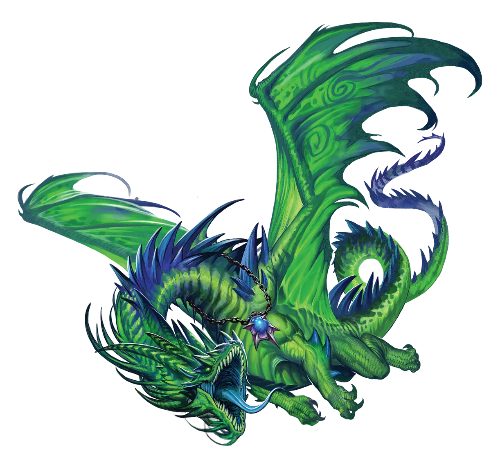
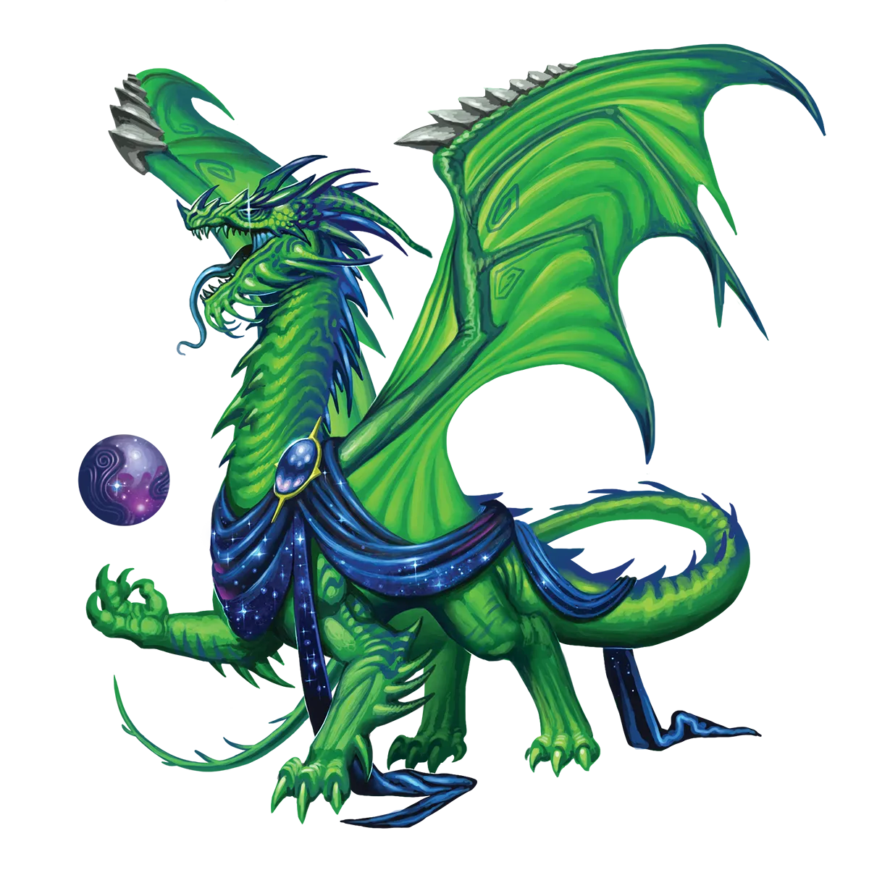

填补虚空
永恒虚空龙用来抵御虚空腐败的技巧之一，它们口语称之为“填补虚空”。本质上，它们会对某个其他话题、爱好或追求变得热情，这帮助它们获得目标或理解自身欲望。这反过来使它们更易避免再次沉入腐败及其带来的力量的诱惑。即使无法用其他任何东西填补虚空，永恒之光仪式仍能帮助它们免于直接滑落到那条滑坡上。
虚空龙 Void Dragon |
|
|
永恒之光仪式对虚空龙的含义与其他龙类截然不同。对大多数龙而言，这是需要付出巨大代价的机会。但对于虚空龙，它代表了更深层的东西――救赎。虚空龙因异界实体的先天腐败，注定会被逐渐侵蚀的虚空吞噬，转化为毁灭之潮，几乎只能进行吞噬与毁灭。大多数虚空龙会与这一命运抗争一段时间，但最终都会沦为受害者。然而，永恒之光仪式能移除影响龙类的状态，甚至包括一些无法以其他方式移除的状态。因此，虚空龙确信，是它们同族中某位创造了这一仪式，作为救命稻草，让它们得以逃避血统带来的悲剧性与不可避免的命运。执行永恒之光仪式能完全逆转虚空腐败的过程，而且从此之后，腐败的扩散被限制为严格自愿的增强，即通过专注于虚空属性来接受的。然而，关键在于，为了虚空力量而接受有限度的腐败，并不会再次开启逐渐腐败的滑坡。时钟已停止，如果虚空龙不再专注于强化虚空力量，腐败便不会进一步增长。因此，虚空龙能仅接受自己觉得能驾驭的腐败量来换取力量，而这个量可以是零。这一发现改变了生命，永恒之光仪式传播后，相当大比例的尚存意志抗争腐败的虚空龙选择执行了该仪式。即便如此，仍有龙拖延仪式而堕入腐败，或者意志薄弱，在有能力执行仪式之前就被毁灭之潮吞没。除此之外，还有大量虚空龙早已堕入腐败，通常是较年长且更强大的龙类。更糟的是，它们腐败同胞的毁灭并非无意识，腐败的传统派会以超越对其他所有猎物的兴致，搜寻并摧毁永恒虚空龙。 永恒虚空龙加入冒险团队，是为了在提升力量的同时保护自己。它们通常不会告诉同伴，可能会有一头极强大的虚空龙前来杀死所有人，这一隐瞒不止一次导致重大悲剧。尽管更阴险的结伙似乎更适合永恒虚空龙那种略带腐败的诱惑，但永恒虚空龙有时会故意选择具有救赎性或理解心、道德罗盘坚定的同伴，以帮助它们做出决定并守护它们。永恒虚空龙倾向于选择能提升意志力的职业，以便更好地抵御腐败，而那些寻求完全避免腐败的，甚至可能成为善良神�o的牧师或圣武士。魔契师也很有道理，因为它们已习惯于力量是双刃剑。 填补虚空 永恒虚空龙用来抵御虚空腐败的技巧之一，它们口语称之为“填补虚空”。本质上，它们会对某个其他话题、爱好或追求变得热情，这帮助它们获得目标或理解自身欲望。这反过来使它们更易避免再次沉入腐败及其带来的力量的诱惑。即使无法用其他任何东西填补虚空，永恒之光仪式仍能帮助它们免于直接滑落到那条滑坡上。 虚空龙特质 Void Dragon Traits 你出身于一脉遭星海腐蚀的毁灭者――虚空龙世系。 |
  |